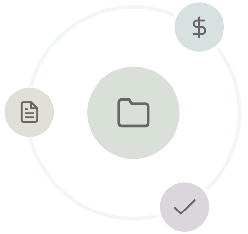

@let activeProjects = store.active();
@let completedProjects = store.completed();

<div class="flex justify-content-between align-items-center">
  <h1>Projects</h1>

  @if(activeProjects.length || completedProjects.length) {
  <o-button (onClick)="onCreate()">New Project</o-button>
  }


</div>

@if(loadingActive() || loadingCompleted()) {

<p-skeleton width="100%"
            height="300px" />

} @else if (!activeProjects.length && !completedProjects.length) {

<empty-state-placeholder title="Create your first project"
                         subTitle="Organise all work around one topic. Keep track on invoices, proposals, tasks, and more in one place"
                         btnText="Create project"
                         (onCreateClick)="onCreate()"
                         class="o-mt-40">

  <ng-template oTemplate="sample">
    <div class="sample-img">
      
    </div>
  </ng-template>

</empty-state-placeholder>

} @else {

<div class="o-mt-40">
  @if(!completedProjects.length) {

  <ng-container *ngTemplateOutlet="projectsList;context:{ projects:activeProjects }"></ng-container>

  }
  @else {

  <p-tabView [activeIndex]="activeTab()">

    <p-tabPanel header="Active">
      <ng-container *ngTemplateOutlet="projectsList;context:{ projects:activeProjects}"></ng-container>
    </p-tabPanel>

    <p-tabPanel header="Completed">
      <ng-container *ngTemplateOutlet="projectsList;context:{ projects:completedProjects }"></ng-container>
    </p-tabPanel>

  </p-tabView>

  }

</div>

}


<ng-template #projectsList
             let-projects="projects">
  <div class="flex flex-wrap justify-content-start o-gap-30">

    @for (project of projects; track $index) {
    <project-card [data]="project"
                  class="cursor-pointer"
                  (click)="goToProject(project.id)" />
    }

  </div>

</ng-template>